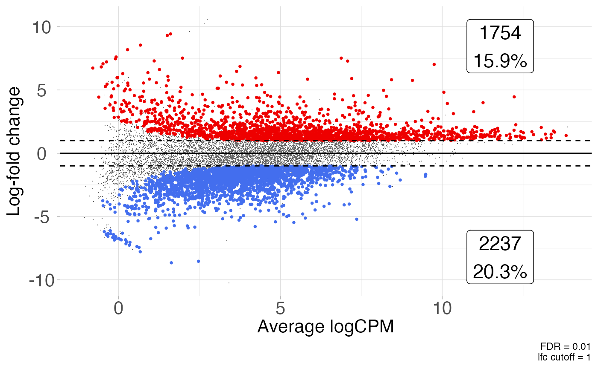

Create an MD (MA) plot from a data.frame containing differential expression results.
Usage
plot_md(
df,
x = "logCPM",
y = "logFC",
sig_col = "FDR",
lab = NULL,
fdr = 0.05,
lfc = 0,
annotate_counts = TRUE,
label_sig = FALSE,
up_color = "red2",
down_color = "royalblue2",
nonde_color = "grey40",
up_alpha = 1,
down_alpha = 1,
nonde_alpha = 1,
up_size = 1,
down_size = 1,
nonde_size = 1,
up_shape = 16,
down_shape = 16,
nonde_shape = ".",
xmax_label_offset = 0.85,
ymax_label_offset = 0.8,
ymin_label_offset = 0.8,
lab_size = 6,
lab_digits = 1,
x_axis_limits = NULL,
y_axis_limits = NULL,
raster = FALSE,
raster_dpi = 300,
raster_dev = "cairo",
...
)Arguments
- df
dataframe containing log-fold-change, p-value, and logCPM columns.
- x
column in dataframe containing the logCPM data. Default ("logCPM")
- y
column in dataframe containing the log-fold-change values. Default ("logFC")
- sig_col
column in dataframe containing the results from significance testing. Default ("FDR")
- lab
column in dataframe containing the labels to plot if label_sig = TRUE. Default NULL
- fdr
numeric. Significance level cutoff for plotting. Values below the given fdr threshold are considered significant. Default (0.05)
- lfc
numeric. Log-fold-change cutoff for plotting. Values greater than the abs(lfc) and less than fdr are displayed as differentially expressed. Default(0)
- annotate_counts
TRUE/FALSE. Annotate the plot with the summarized gene counts
- label_sig
logical. Apply
ggrepel::geom_text_repel()to significant DE genes. Default FALSE- up_color
Point color of the up-regulated features. Default ("red2")
- down_color
Point color of the down-regulated features. Default ("royalblue2")
- nonde_color
Point color of the unperturbed features. Default ("grey40")
- up_alpha
Point alpha value of the up-regulated features. Default (1)
- down_alpha
Point alpha value of the down-regulated features. Default (1)
- nonde_alpha
Point alpha value of the unperturbed features. Default (1)
- up_size
Point size of the up-regulated features. Default (1)
- down_size
Point size of the down-regulated features. Default (1)
- nonde_size
Point size of the unperturbed features. Default (1)
- up_shape
Point shape of the up-regulated features
- down_shape
Point shape of the down-regulated features
- nonde_shape
Point shape of the unperturbed features
- xmax_label_offset
numeric. Value between 0 and 1 inclusive. Controls the x-position of the count labels
- ymax_label_offset
numeric. Value between 0 and 1 inclusive. Controls the y-position of the 'up' count label
- ymin_label_offset
numeric. Value between 0 and 1 inclusive. Controls the y-position of the 'down' count label
- lab_size
numeric. If annotate_counts = TRUE specify the label size. Default = 6.
- lab_digits
numeric. The number of digits used when rounding percentage values when annotate_counts=TRUE. Default (1)
- x_axis_limits
numeric vector of axis limits supplied to ggplot2::coord_cartesian(). Default (NULL)
- y_axis_limits
numeric vector of axis limits supplied to ggplot2::coord_cartesian(). Default (NULL)
- raster
Should the points in the plot be rasterized? default FALSE. If TRUE, points will be rasterized using `ggrastr`
- raster_dpi
integer Sets the desired resolution in dots per inch (default = 300)
- raster_dev
string Specifies the device used, which can be one of: "cairo", "ragg", "ragg_png" or "cairo_png" (default="cairo")
- ...
Additional arguments passed to
ggrepel::geom_text_repel()
Examples
plot_md(GSE161650_de, fdr = 0.01, lfc = log2(2))
